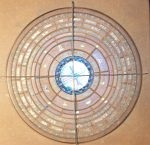
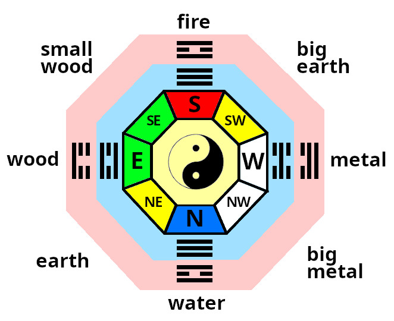
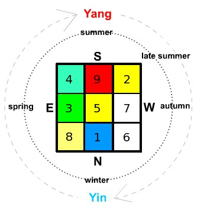
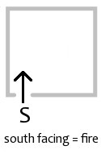
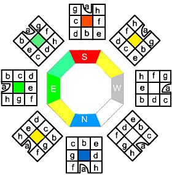
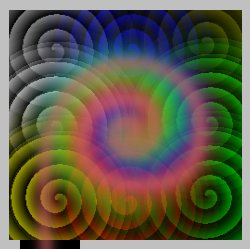
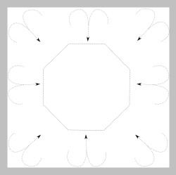
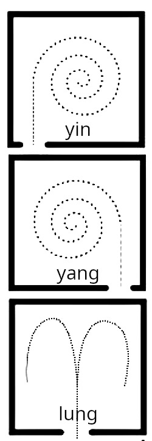

The Chinese discovered that Qi (energy) had differing characteristics depending upon the direction of movement. They derived a system of reading these energetic interactions using the main 5 elements qualities. A Lo Pan is used to obtain information on orientation and the qualities of energy. It has a magnetic compass at its center with radial and concentric markings to indicate the main 8,and sub divisions, directions, the former and later heavenly sequences, portents (fortune) of spaces, Water Dragon (flows of water, rivers/streams) information and more.

My Lo Pan
Bagua (or Pakua) is the Chinese for 8 directions.
The 8 main directions are:
Water, Earth, Wood, Small Wood, Fire, Big Earth, Metal, Big Metal.
The inner Trigrams relate to the "Former Heavenly Sequence". A system derived to explain the energy of free flowing Feng.
The outer Trigrams relate to the "Later Heavenly Sequence". A system derived to explain the exchange of energy within a building/space. Essentially the earth energy (Shui) component inherent in the structure or gravitational effect .
The Heavenly Bagua is moveable and the Earthly Bagua is fixed. Correctly combining and reading these two Bagua's gives the portent of a particular space.

Earthly & Heavenly Baguas
The Chinese always show fire ( south ) at the top because it relates to the heavens ( S, fire, yang ) above and the earth(N, water, yin) below.
The sub-divisions are characterised by the ratio of each main element. There are 64 Hexagrams [ 6 (2x3 trigrams) line symbols, consisting of straight line (yang) and broken lines (yin)] which describe more specific qualities.
NB. The eight main directions are the most commonly used, however there are further subdivisions (down to 2 degrees) which can give a more detailed divination - for specific work (desk) and furniture positioning and the calculation of the "Water Dragon" (orientation of external water flows in relation to a building). See the Yin/Yang & advanced sections for more information.
Lo Shu is a numeric magic square which said to have been found as markings the back of a Turtle.
It ties in the 8 directions and seasonal changes and relates to personal horoscope numbers.
(see horoscope section to calculate your own personal number).
Odd and even numbers alternate in the periphery of the square, the four corners are even numbers,
and the 5 odd numbers form a cross in the centre. Each line (vertical, horizontal and diagonal) add
up to 15, which is the number of days in each of the 24 cycles of the Chinese solar year.

Lo Shu (magic square)
I have indicated how the seasons tie in as well as how the amount of Yin and Yang varies. Maximum Yin during winter, increasing Yang and decreasing Yin to mid summer and vice versa.
To establish the overall characteristic of Qi ( energy ) within a building , take a
magnetic compass reading at the main door (from the door facing outwards).
It is the flow of energy into the building that we are interested in. Further qualities of energy in seperate rooms is determined by entry flow. This is a sub-flavour of energy from the original source.
Whilst each space contains all of the five elements energies - the entry point
is key to determining what element has the most influence.

E.g.. Qi flowing into a room facing south has the general characteristic of the fire element. The two Bagua's (Earthly and Heavenly) give insight into the properties and interactions of energy by direction.
These spaces refer to the general characteristics. The true
actual magnetic orientation of spaces within a room.
The energetic characteristics can be summarised simply.
| Space | Quality | Action |
|---|---|---|
| 1 Knowledge | Higher good,info needed | Books, guides |
| 2 Family | Fellowship, employees | Photos of |
| 3 Wealth, Health | Value, quality | Portrait, Financial docs |
| 4 Fame | How you are percieved | Items related to how you wish to be percieved |
| 5 Marriage, Business | Unions, Partnerships | Photos,items related to |
| 6 Children | New ideas, projects, early growth | Photos, items related to |
| 7 Helpful Friends | Helpful | Telephone, Computer |
| 8 Career | Lifes Purpose, Fusion | Items relating to vocation, purpose |
These "moveable" portents tell us the interactions of free flowing qi (energy) with the stable state of the above Earthly Bagua.
| Space | Quality | Portent |
|---|---|---|
| a | Life, Stable, Balanced | + |
| b | Longevity, Extends Life | ++ |
| c | Creates Qi | +++ |
| d | Problems, Hinderances | -- |
| e | Death, Disconnects | --- |
| f | Five Ghosts, Ancestors | + |
| g | Good fortune, Luck | ++ |
| h | Bad influences, Malign | + |
Eg. A south facing house (door to south) has predominantly Fire Qi (energy) entering it, so the interaction to an eastward wall space ( middle of East side) would give us an exchange of wood (east) with fire (south) - wood feeds fire - hence the portent would be very beneficial (as you can see above and in the diagram, a portent "C" or creates Qi). The energetic activity in that space is very generative.
This example is one of the most simple examples, the others are more complex.
A full reading is made by overlaying the former and later heavenly sequences. Combining the two trigrams (3 lines) gives a hexagram (6 lines) which describes the energetic properties of a space.
8 X 8 = 64 hexagrams which relate to the 64 hexagrams of the "I Ching".

Portent map

Flow representation
Flows of Qi and the eddying corner effect explain how the 8 directions are applicable to a 4 sided room.
Every space contains all the elements, however we can however determine which element/s have the greatest influence and the overall characteristic.
Door position also tells us whether the Qi is more or less active.
Yang room = left sided doorway, Qi spirals clockwise. Most active, best for working activities
Yin room = right sided opening, Qi spirals anti-clockwise. Least active, best for calming ( bedrooms, relaxation etc)
Lung room = central opening, Qi spirals both ways, yin quality to the right side of the room (calming), yang to the left (active)

